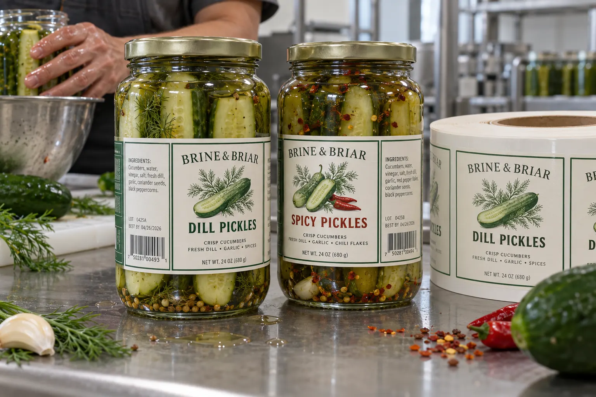

Brine is a use condition, not a design motif
With pickles, I ask to see the jar opened. Brine can reach the label when someone tips the jar or takes out a spear. A textured paper may make the product feel handmade, but that is not a reason to skip a wipe test. HERMA's glass-label guidance distinguishes paper with protective finishing from wipeable film and notes moisture and temperature as adhesive considerations. Those are options to test, not a guarantee for every brine recipe or wash routine.
Picture two composite kitchen runs
One composite producer packs dill and spicy pickles in the same round jar. The buyer wants a common die and two designs. I would measure the straight wall below the shoulder and keep the flavor name away from the vertical glass seam. If the spicy copy grows longer, the answer may be a tighter information hierarchy, not smaller legal text.
A second composite producer hot-fills jars and later chills them. The glass temperature at application matters as much as the refrigerator temperature weeks later. If the team applies labels while jars are damp from cooling, I would change the process or run a documented test rather than promise that a stronger adhesive alone will correct the wet surface.
Run a realistic jar trial
Label filled jars at the intended line speed and surface condition. Let them go through the normal cooling and storage route. Open a sample, splash a measured amount of product brine on the outside, wipe it with the same method a customer might use, then inspect print smearing, edge lift and the lot code. Keep the brine off the label applicator in production; the consumer-use trial is a separate check.
| Risk | Practical check |
|---|---|
| Wet glass at labeling | Record surface condition and temperature |
| Brine splash | Wipe printed face and edges |
| Jar shape | Confirm straight-wall label panel |
| Variant copy | Proof all flavors at actual size |
Our buying view
Keep the tactile paper only when it earns its place
I like a food label that feels specific to the product. But if the jar will be handled in a wet kitchen, I would accept a different finish before asking customers to baby the package.
What to send for a quote
- Filled jar and lid in each size.
- Hot-fill, cooling and labeling sequence.
- Brine/wipe expectations and any refrigeration.
- Artwork, quantities and required variable code.
See lid versus body placement and condensation on glass for related decisions.
Frequently asked questions
Is paper unsuitable for pickle jars?
No. A suitably protected paper can work, but it needs a wipe and brine-splash trial on the finished jar.
Should labels be applied to wet glass?
Do not assume ordinary pressure-sensitive adhesive will bond to wet glass. Test and control the application surface.
Can one label fit several jar sizes?
Only if each jar has the same usable flat panel and the final text and code remain readable.
Related buyer guides
Review your label specification
Send package photos, label dimensions, material details, quantity and application conditions. Include good and failed samples where possible so the discussion starts with evidence.